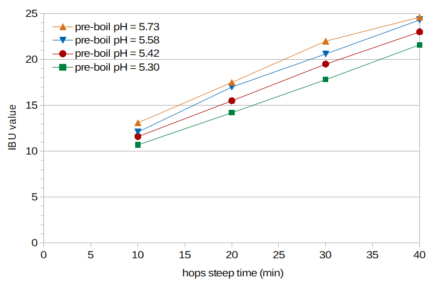

Abstract
It is commonly believed that utilization, and therefore IBUs, will decrease as the wort pH decreases. In this post, I describe an experiment designed to test and quantify this relationship. There is a decrease of about 1 IBU per 0.15 unit decrease in pH for the conditions in this experiment. This decrease in IBUs is most likely not due to a decrease in the amount or rate of isomerization, nor does it seem to be predominately from losses of isomerized alpha acids (IAA). Instead, it appears to be mostly caused by losses of "auxiliary bitter compounds" (ABC, or nonIAA). If the Tinseth formula is modified to (approximately) separate the contributions of IAA from ABC, the expected decrease in IBUs from pH 5.75 to 5.25 can be from about 15% to 35%, depending primarily on boil time. This effect of pH on IBUs has been incorporated into two online calculators for estimating IBUs available at GitHub, the mIBU model and the SMPH model.
1. Introduction
1.1 Mash and Wort pH
The pH of a mash made from low-alkalinity water and pale malt is about 5.8 [deLange; Palmer and Kaminski, p. 58]. In a previous blog post, I measured a pH of 5.7 to 5.9, depending on the specific gravity of the wort, with a pH of 5.75 at a specific gravity of about 1.055. The typical brewer should aim for a mash pH in the ballpark of 5.2 to 5.4 [Palmer and Kaminski, p. 60; Noonan, p 144; Fix, p 49; Troester citing Kunze (2007) and Narziss (2005)], although a pH as high as 5.8 is still acceptable [Troester]. It is often reported that the pH decreases during the boil by about 0.1 to 0.3 pH units [MacWilliam, p. 68; deLange, Troester; Bamforth, p. 6]. The amount of this decrease depends on the duration of the boil, starting pH, and specific gravity. In general, longer boils produce a greater decrease in pH [MacWilliam, p. 68] and a higher starting pH produces a greater decrease in pH [deLange]. It has been reported that the decrease in pH is greater with lower specific gravities [MacWilliam, p. 69; Bamforth, p. 6], but I found the opposite effect.
1.2 pH and Alpha-Acid Utilization
It is said that a decrease in wort pH will decrease alpha-acid utilization because "isomerization is slower" [e.g. Lewis and Young, p. 266]. (Utilization is the ratio of isomerized alpha acids in the finished beer to the total alpha acids added.) Hough says that "the efficiency of the utilization increases at high pH values and falls with low ones, but only small variations are possible in conventional practice" [Hough et al., p. 489]. Askew noted that "at about the pH value of wort (5.3-5.5) efficiency of utilization of acids will be very sensitive to pH; this is in keeping with the statement of van Cauwenberge that variation from pH 5.2 to 5.5 can cause an alteration of 20% in isohumulones content on boiling hops with wort" [Askew 1964, p. 510]. Mark Malowicki looked at isomerized alpha acids (IAA) produced and degraded during boiling at pH values of 4.8, 5.2, 5.6, and 6.0, and found that "the level of iso-alpha concentrations ... was nearly identical for all pH levels" in a buffer solution [Malowicki, p. 37], and that the use of maltose, glucose, or calcium in the solution had no impact on isomerization [Malowicki, p. 39]. He speculated that "the losses to trub would better explain the differences in utilization that are attributed to pH..., since rate of isomerization does not appear to be affected" [Malowicki, p. 41 (emphasis mine)]. Kappler et al. looked at the recovery rate of IAA, which is inversely related to the losses of IAA that occur during the boil. They found that while there was a large change in IAA recovery rates between pH 4.0 (58% recovery) and pH 8.0 (95% recovery), the difference in recovery rates (and hence losses) between pH 5.0 and pH 6.0 was much smaller (80% and 86% recovery, respectively) [Kappler et al., p. 334].
In short, while the conventional wisdom holds that a decrease in wort pH lowers utilization (e.g. [Hall, p. 57; Hieronymus, p. 189; Garetz, p. 124]), it is unclear exactly how this relationship might be characterized or quantified. Malowicki did not find any relationship between wort pH and the production of IAA [Malowicki, p. 41]. A significant decrease in utilization is not explained by losses of IAA, either, because Kappler found only a relative 6% change in losses of IAA between pH 6.0 and 5.0 [Kappler et al., p. 334], which are both extreme pH levels for normal brewing. Earlier reports address the relationship between pH and utilization or IAA; none (that I am aware of) look at the impact of pH on IBUs.
1.3 IBUs, Isomerized Alpha Acids (IAA), and Auxiliary Bittering Compounds (nonIAA)
The International Bitterness Unit (IBU) estimates the concentration of bitter substances in beer, including (a) isomerized alpha acids (IAA) and (b) the other bitter substances that are referred to collectively as "nonIAA" [Peacock, p. 161] or "auxiliary bitter compounds" (ABC). The nonIAA substances include oxidized alpha acids, oxidized beta acids, hop polyphenols, and malt polyphenols. Depending on the hops AA rating (alpha-acid rating), concentration in the boil, boil time, steeping temperature, age and storage conditions, and other factors, a measured value of, say, 20 IBUs might be composed of anywhere from 10% to 90% IAA. In typical (not hop-forward) beers, the IBU is very roughly 80% IAA and 20% nonIAA. I have a somewhat lengthy summary of how IAA and nonIAA relate to the IBU in a separate blog post, A Summary of Factors Affecting IBUs. If we want to model the impact of pH on IBUs, it will help to estimate the impact on IAA and nonIAA separately, because wort pH may impact these substances differently.
2. Approach
The approach used in this experiment was to create four conditions (i.e. four batches of beer) with pre-boil target pH levels from 5.26 to 5.73. The wort from each condition was sampled after 10, 20, 30, and 40 minutes of hop steep time. All sixteen samples were fermented into beer. The resulting IBU values were then fit to equations that provide a mapping between IBU values and concentrations of IAA and nonIAA. The changes in IAA and auxiliary bittering compounds as a function of pH were approximated by a linear fit to the data; these changes were then mapped to scaling factors based on pH. Finally, the Tinseth formula was modified to (approximately) separate the contributions of IAA from nonIAA, so that these two scaling factors can be applied within the Tinseth formula in order to predict IBUs as a function of pH.
3. Experimental Methods
I brewed four batches of beer for this experiment. The four batches were designed to be identical in all respects except for the pH of the wort.
I created one large pool of wort from which the four batches were created, with 14.73 lbs (6.68 kg) of Briess Pilsen DME in 7.957 G (30.12 l) of water, yielding 9.00 G (34.07 l) of wort with a specific gravity of 1.074. I let this wort sit overnight to let the pH fully stabilize. (Other than the time required for pH stabilization, I have found no difference in the characteristics of wort created from Briess Pilsen DME or wort created from two-row malt and low-alkalinity water, at least in terms of pH behavior.) I then created each condition with 2.125 G (8.044 l) of this wort and an additional 2.125 G (8.044 l) of water, yielding wort with gravity 1.037 and pH 5.91. I added phosphoric acid to lower the pH of each condition as closely as I could to a target pre-boil pH of 5.74, 5.58, 5.42, and 5.26, respectively. The difference of 0.16 units per condition was expected to become a difference of 0.15 units after the boil.
I used hops from a 1 lb (0.45 kg) bag of Citra HBC394 from Hops Direct that were purchased soon after harvest and stored in a vacuum-sealed bag in my freezer. This bag had an alpha-acid rating on the package of 14.3%. With a 25% loss for Citra stored six months at room temperature, a storage temperature of -5°F (-20°C), a storage factor of 0.6, and an age of 8 months, the freshness factor predicted by Garetz [Garetz, pp. 110-118] is 0.965, yielding an AA rating of 13.8% on brew day. This AA rating does not have to be precisely estimated, however, because the estimate of IAA losses (Section 5) will adjust to accommodate errors in the AA rating. Each condition used 0.645 oz (18.28 g) of hops, targeting 170 ppm of alpha acids. During the boil, I contained the hops in a large nylon coarse-mesh bag in order to not include large hop particles in my samples. Previous experiments (from Brülosophy and Four Experiments on Alpha-Acid Utilization and IBUs) have not shown a significant impact of a mesh bag on measured IBU values.
I heated each condition to boiling (uncovered), and then boiled for 10 minutes to allow initial foam to dissipate. After this 10 minutes of boiling, I added the hops and covered the kettle. I boiled the wort with the cover on (except for taking samples) in order to minimize evaporation losses and changes to specific gravity. At 10-minute intervals after adding the hops, I took 14-oz (0.41-liter) samples, quickly cooled them to room temperature in an ice bath, and stored them in sanitized containers. After the boil, I measured the pH of the wort with a sanitized probe, aerated the sample by vigorous shaking for 1 minute, and pitched 0.009 oz (0.25 g) of Safale US-05 yeast (age 10 months) to target 750,000 viable cells per ml and degree Plato [Fix and Fix, p. 68]. After all samples were taken, the containers were cracked open to vent CO2, and they fermented for about a week. After eight days of fermentation, I sent 4 oz (0.12 l) of each sample to Oregon BrewLab for IBU and original-gravity measurements. The final gravity of all samples was about 1.005 (minimum 1.00495; maximum 1.0055).
4. Experimental Results
Tables 1 and 2 provide data for each condition, including the measured pre-boil pH, pre-boil specific gravity, post-boil gravity and volume, and (for each sample) post-boil pH, beer pH, original gravity, and IBUs. (Original gravity and IBUs were measured by Oregon BrewLab.) Figure 1 shows the measured IBU values for each condition and sample time.
The change in pH with boil time is expected to be approximately linear, and in fact the data from this experiment are modeled very well by a decrease of 0.0156 pH units every 10 minutes, independent of the starting pH. Using the average pH slope over all conditions and the estimated initial pH per condition, the root-mean-square error between measured and estimated pH values during the boil is 0.004, with a maximum error of 0.009. Because of this regularity in the data and a mismatch between the measured pre-boil pH and the expected pre-boil pH in two conditions (A and D), I suspect that the measured pre-boil pH values of those two conditions are, for some unknown reason, less accurate. In the analysis below, therefore, I use "corrected" pre-boil pH values (from the linear fit to the four post-boil pH values) of 5.73, 5.58, 5.42, and 5.30 for Conditions A through D, respectively. (Only Condition D is noticeably affected, with a measured pre-boil pH of 5.26 and a corrected pH of 5.30.)
The specific gravity values change very little during the boil, as expected because the kettle was covered. There is a discrepancy between my measured post-boil gravity and the gravity measured by Oregon BrewLab; my post-boil gravity values are consistently higher by almost 0.003 points (from approximately 1.0392 to 1.042). The pre-boil gravity values that I measured are also somewhat higher than would be expected from the original gravity value at 10 minutes as measured by Oregon BrewLab. (I have since found that I had a bias in my hydrometer readings, and have now switched to a different hydrometer.) In the analysis below, I used specific gravity values from Oregon BrewLab and extrapolated from those values to estimate the specific gravity at the start of the boil. (Actually, Oregon BrewLab reported measurements in degrees Plato, and I converted those values to specific gravity using an equation from Spencer Thomas.)
The beer pH values are very consistent within each condition (despite the differences in pH values during the boil), and there is a consistent decrease in beer pH by about 0.04 units per condition, with values of 3.93, 3.88, 3.84, and 3.80 from Conditions A through D, respectively. This overall small total difference of 0.13 pH units between the different conditions of finished beer is at odds with with a surprisingly large difference in taste, as described in the Conclusion (Section 7).
Figure 1 plots the measured IBU values for each condition and time point. It is clear that the IBU levels decrease as the pre-boil pH decreases, and that the amount of decrease is about the same at each sample time.
| Condition | measuredpre-boil pH | pre-boil SG (hydrometer) | post-boil SG (hydrometer) | post-boil volume |
| A | 5.74 | 1.0385 | 1.042 | 4.05 G / 15.33 l |
| B | 5.58 | 1.038 | 1.042 | 4.18 G / 15.82 l |
| C | 5.42 | 1.0385 | 1.042 | 4.14 G / 15.67 l |
| D | 5.26 | 1.038 | 1.042 | 4.15 G / 15.71 l |
| Condition A: | |||||
| time | 10 min | 20 min | 30 min | 40 min | |
| post-boil pH | 5.70 | 5.685 | 5.67 | 5.65 | |
| beer pH | 3.93 | 3.94 | 3.93 | 3.94 | |
| OG | 1.0380 | 1.0380 | 1.0384 | 1.0392 | |
| IBUs | 13.1 | 17.5 | 22.0 | 24.6 | |
| Condition B: | |||||
| time | 10 min | 20 min | 30 min | 40 min | |
| post-boil pH | 5.55 | 5.53 | 5.52 | 5.50 | |
| beer pH | 3.88 | 3.90 | 3.88 | 3.87 | |
| OG | 1.0380 | 1.0388 | 1.0384 | 1.0392 | |
| IBUs | 12.1 | 17.0 | 20.6 | 24.3 | |
| Condition C: | |||||
| time | 10 min | 20 min | 30 min | 40 min | |
| post-boil pH | 5.39 | 5.38 | 5.36 | 5.35 | |
| beer pH | 3.84 | 3.84 | 3.84 | 3.86 | |
| OG | 1.0384 | 1.0388 | 1.0384 | 1.0392 | |
| IBUs | 11.6 | 15.5 | 19.5 | 23.0 | |
| Condition D: | |||||
| time | 10 min | 20 min | 30 min | 40 min | |
| post-boil pH | 5.27 | 5.25 | 5.24 | 5.22 | |
| beer pH | 3.80 | 3.79 | 3.80 | 3.81 | |
| OG | 1.0384 | 1.0380 | 1.0384 | 1.0396 | |
| IBUs | 10.7 | 14.2 | 17.8 | 21.6 | |
 Figure 1. IBUs from each condition (different wort pH) and sample time (time for which the hops steeped in the boiling wort). It can be seen that (a) IBUs decrease as the wort pH decreases, and (b) roughly the same amount of decrease in IBUs is observed at each sample time.
5. Parameter Estimation and Results
5.1 Estimating Parameters to Map from IBU to IAA and nonIAA
In order to estimate IAA and nonIAA levels from IBUs, I used the technique described in Estimating Isomerized Alpha Acids and nonIAA from Multiple IBU Measurements. This technique uses multiple IBU measurements from the same (or nearly identical) conditions to determine the most likely concentrations of IAA and nonIAA in the finished beer, assuming (a) the Peacock model of IBUs, in which IBU = 5/7 × ([IAA]beer + [nonIAA]beer) [Peacock, p. 157], and (b) Malowicki's model of alpha acid isomerization [Malowicki, pp. 25-27]. This technique includes both the production or dissolving of nonIAA components from the hops and losses of nonIAA to trub and fermentation.
Because malt polyphenols are impacted by pH potentially differently than other auxiliary bittering compounds, I estimated the impact of pH on each ABC component separately, as discussed in Section 5 of the blog post Estimating Isomerized Alpha Acids and nonIAA from Multiple IBU Measurements. I have estimated that of the auxiliary bittering compounds, oxidized alpha acids (oAA) produced during the boil have the greatest contribution when using well-preserved hops, followed by malt polyphenols, with only minor contributions from hop polyphenols and oxidized beta acids. Therefore, the technique in this case estimates the impact of pH on oxidized alpha acids, uses the previously-developed model for the impact of pH on malt polyphenols, and assumes that the impact of pH on hop polyphenols and oxidized beta acids has a negligible impact on IBU values.
This estimation technique tells us not only what the estimated concentrations are, but also the loss factors that map from (a) the concentration of IAA produced during the boil to the concentration of IAA in the beer and (b) the concentration of alpha acids added to the kettle to the concentration of oxidized alpha acids in the beer. In this experiment, we don't really care that much what the IAA and oAA levels are or how great the loss factors are within each condition, but we do care about the relative loss factors across conditions. Because the beers are as similar as possible except for wort pH, these relative loss factors tell us how much the wort pH impacts IAA, oAA, and IBU values. (The term "loss factor" means a multiplication factor that accounts for losses in the concentration of a substance; a loss of 10% corresponds to a loss factor of 0.90, and a loss of 80% corresponds to a loss factor of 0.20).
Because the pH changes during the boil and it is clear from Figure 1 that pH impacts IBU values, I modified the parameter estimation technique to account for the change in pH during the boil. The change in pH during the boil is very regular, as noted above, with an average decrease of 0.0156 pH units every 10 minutes. The decrease in IBUs with pH is also very regular across conditions; there is an average decrease of 1.075 IBUs across conditions with an average pH decrease per condition of 0.144. Because of this regularity, we can estimate the IBU values that would have been observed if the pH had remained constant during the boil, by multiplying the change in pH (between the first sample in the condition and the current sample) by the average IBU change per pH decrease (1.075/0.144), and adding that offset to the observed IBU values. I used these "normalized" IBU values in parameter estimation, although this normalization did not have a large impact on results (with a maximum correction (increase) of 0.35 IBUs at 40 minutes).
5.2 Estimating IAA and oAA Loss Factors Independently for Each Condition
The estimation technique described in Section 5.1 was used to estimate IAA and oAA loss factors for each condition. Table 3 shows the estimated values and root-mean-square (RMS) error for each condition. To illustrate what the loss factors mean, the IAA loss factor of 0.390 and the oAA loss factor of 0.064 in Condition A indicate that almost 40% of the IAA produced during the boil was lost during the boil and fermentation, and over 6% of the alpha acids added to the wort ended up as oxidized alpha acids in the finished beer.
The overall RMS error was 0.253 IBUs. The low values of the RMS errors indicate that we were able to find a good fit between the model and the data. The small number of data points per parameter almost certainly guarantees that there is overfitting, but the relative consistency of the IAA loss factors across conditions and the clear trend in oAA loss factors is encouraging.
| Condition | IAA loss factor | oAA loss factor | RMS error (IBUs) |
| A | 0.390 | 0.064 | 0.287 |
| B | 0.408 | 0.050 | 0.150 |
| C | 0.391 | 0.043 | 0.191 |
| D | 0.377 | 0.033 | 0.337 |
The IAA loss factors range from 0.377 to 0.408, indicating that in all cases about 39% of the IAA produced during the boil remained in the finished beer (and the other 61% was lost to trub, fermentation, and other factors). These values don't show any clear pattern of change by condition. The oAA loss factors range from 0.033 (Condition D) to 0.064 (Condition A), indicating that only about 5% of the alpha acids oxidize during the boil and survive into the finished beer. The oAA loss factors form a clear pattern with a decrease of approximately 0.01 per condition.
5.3 Estimating IAA and oAA Loss Factors Over All Conditions
While no clear pattern emerged from the IAA loss factors in the previous section, Kappler et al. have found that IAA losses increase as the pH decreases. At a pH of 5.0, they found a recovery rate of 80%, and at a pH of 6.0, the recovery rate was 86%. These translate into losses of 20% at pH 5.0 and 14% at pH 6.0. With linear interpolation, we expect the losses in Condition A (at initial pH of 5.73) to be 84.4% and the losses in Condition D (initial pH 5.30) to be 81.8%. Such a (small) loss of IAA with pH would be consistent with the data from this experiment. We can therefore assume that Kappler's loss values are correct (since they were able to measure IAA directly), translate this into a relative scale (with a value of 1.0 at pH 5.75 chosen semi-arbitrarily), and use Kappler's scaling factor with a constant (pH-independent) IAA loss factor. This allows us to estimate 5 parameters (one IAA loss factor and four oAA loss factors) from 16 data points, which is (somewhat) better than estimating 8 parameters from 16 data points.
Translating Kappler's loss values into a scaling factor with a value of 1.0 at pH 5.75 yields
IAAscale = 0.071 × pH + 0.592
where IAAscale is the scaling factor for IAA losses and pH is the wort pH at the beginning of the boil. If we search for a single IAA loss factor across all four conditions but apply this scaling factor to account for a slight loss in IAA as a function of pH, we get an overall IAA loss factor of 0.391 and the results in Table 4. The overall RMS error is 0.281 IBUs, which is higher than the RMS error in Section 5.2 (as it should be) but still fairly low, indicating a continued good fit between model and data. (If we use the hops AA rating of 11.4% estimated below in Section 6, the best overall IAA loss factor increases from 0.391 to 0.475 to compensate for the reduction in AA, and the estimated oAA loss factors are the same.)| Condition | IAA loss factor (scaled) | oAA loss factor | RMS error (IBUs) |
| A | 0.391 | 0.065 | 0.288 |
| B | 0.386 | 0.056 | 0.239 |
| C | 0.382 | 0.044 | 0.191 |
| D | 0.379 | 0.030 | 0.373 |
The IAA loss factors in Table 4 are the overall loss factor of 0.391 multiplied by the scaling factor estimated from Kappler's data. The oAA loss factors shown in Table 4 have a clearly linear trend with pH. We can represent the oAA loss factor as a function of pH with the equation:
oAAfactor = 0.08029 × pH − 0.39352
which has a maximum difference of 0.002 from the estimated loss-factor values (at Conditions C and D).
5.4 Estimating the oAA Scaling Factor
We now have an IAA scaling factor that estimates IAA losses as a function of pH, in a way that is independent of the specific conditions of this experiment. (The conditions of this experiment are reflected in the overall IAA loss factor of 0.391.) We can also determine an oAA scaling factor that estimates oAA losses. The oAA factor at pH 5.75, according to the equation in Section 5.3, is 0.06813. To create a scaling factor of 1.0 at pH 5.75, we can scale the previous equation by 14.679 (1/0.06813) to have the same slope (as a function of pH) but a value of 1.0 at 5.75. This yields
oAAscale = 1.1785 × pH − 5.776
and now we can estimate IAA and oAA losses as a function of pH independently from the loss factors that are specific to this experiment. If we use these scaling factors with the estimated IAA loss factor of 0.391 and oAA loss factor of 0.06813 at pH 5.75, re-analysis of the IBU data shows an RMS error of 0.497 IBUs, which still seems reasonable.
6. Modifying the Tinseth IBU Formula to Account for pH
With the scaling factors derived in Section 5, we can now estimate the decrease in IBUs that are caused by losses of IAA and nonIAA as the pH decreases. One problem with applying such an estimation to an existing IBU model such as the Tinseth formula [Tinseth] is that this formula doesn't account separately for the IAA and nonIAA contributions to the IBU. Any modification to the Tinseth formula will therefore be a ballpark approximation of pH effects, but probably better than no modification at all.
In Section 5 of A Summary of Factors Affecting IBUs, I estimate that the nonIAA components contribute to about 5.6% of the utilization in the Tinseth formula. (In this case, if the utilization is U, I don't mean 0.056 × U, but that U = UIAA + 0.056, where UIAA is the utilization from IAA. For example, if the total utilization after 40 minutes is 19.0% (0.190), this can be approximated as being 13.4% from IAA (0.134) and 5.6% from nonIAA (0.056).) This 5.6% estimate corresponds very well with the Rager IBU formula [Pyle], which has a non-zero and roughly constant utilization of 5% (0.05) from 0 to 5 minutes, presumably accounting for nonIAA components at short boil times.
We can then consider the boil-time factor specified by Tinseth,
f(t) = (1 − e(-0.04t)) / 4.15
where f(t) is a factor that predicts the isomerization of alpha acids as a function of time (in minutes). If this factor is greater than .056, we can separate it into IAA and nonIAA contributions. If this factor is less than .056, then we can either (a) emulate the Rager approach and set it to 0.056 to always estimate some IBUs from very short boil times, or (b) set the IAA contribution to zero and the nonIAA contribution to the boil-time factor. We can then multiply these separate utilization factors by the IAA and nonIAA scaling factors that are a function of pH, and sum them up to determine an overall utilization that accounts for changes in pH.In applying this process to the data from this experiment, I found that the Tinseth estimates were overall too high. Since the purpose of this post is not to evaluate the reason for discrepancies between my measured IBU values and the Tinseth formula, but to evaluate how well we can model a decrease in IBUs with pH using a formula like Tinseth's, I performed a search for the best AA rating to fit the data. I also removed the factor from the Tinseth equation that accounts for wort gravity, because I think that utilization decreases with high-gravity worts, but that utilization is not affected by low-gravity worts. The search yielded an AA rating of 11.4%, a fair bit less than the estimated 13.8% but within the possible 20% variation reported by Verzele and De Keukeleire [Verzele and De Keukeleire, p. 331]. The modified Tinseth formula (to account for pH changes) yields the results shown in Table 5. (I did not use the normalized IBU values that correct for a change in pH with boil time, in large part because the effect is minor.)
| Condition A: | |||||
| time | 10 min | 20 min | 30 min | 40 min | |
| measured IBUs | 13.1 | 17.5 | 22.0 | 24.6 | |
| modified Tinseth estimate | 10.12 | 17.18 | 22.06 | 25.47 | |
| difference | 2.98 | 0.32 | −0.06 | −0.87 | |
| Condition B: | |||||
| time | 10 min | 20 min | 30 min | 40 min | |
| measured IBUs | 12.1 | 17.0 | 20.6 | 24.3 | |
| modified Tinseth estimate | 8.97 | 15.94 | 20.76 | 24.13 | |
| difference | 3.13 | 1.06 | −0.16 | −0.17 | |
| Condition C: | |||||
| time | 10 min | 20 min | 30 min | 40 min | |
| measured IBUs | 11.6 | 15.5 | 19.5 | 23.0 | |
| modified Tinseth estimate | 7.79 | 14.67 | 19.43 | 22.75 | |
| difference | 3.81 | 0.83 | 0.07 | 0.25 | |
| Condition D: | |||||
| time | 10 min | 20 min | 30 min | 40 min | |
| measured IBUs | 10.7 | 14.2 | 17.8 | 21.6 | |
| modified Tinseth estimate | 6.84 | 13.65 | 18.34 | 21.63 | |
| difference | 3.86 | 0.55 | −0.55 | −0.03 | |
It can be seen that the Tinseth estimates are all too large at 10 minutes, but that the differences are all nearly the same regardless of the pH level. This indicates that we can modify the Tinseth formula to estimate the change in IBUs as a function of pH.
If we use this modified Tinseth formula to look at some examples, we can see how pH affects IBUs in this model. Let's consider a scenario where we have a post-boil volume of 5.25 G (19.87 liters), hops weight of 2.0 oz (56.70 g), and an AA rating of 10%. If the wort pH is 5.75 and we boil the hops for 10 minutes, the modified Tinseth model predicts 22.67 IBUs (the same as the non-modified model). If we change the wort pH to 5.25, then the modified Tinseth model predicts 14.28 IBUs, or 63% of the value at the higher pH. If the wort pH is 5.75 and we boil the hops for 60 minutes, the model predicts 62.52 IBUs. Changing the pH to 5.25 yields 52.72 IBUs, or 84% of the value at the higher pH. Because most of the effect of pH is seen in the oxidized alpha acids produced at the start of the boil, and because these oxidized alpha acids constitute a greater percentage of the IBU value at shorter boil times, the relative effect of pH is greater at shorter boil times, but the absolute difference in IBUs is about the same at different boil times.
7. Conclusion
This blog post presents an analysis of the impact of wort pH on utilization and IBUs. Using multiple IBU measurements to estimate the contributions of IAA and nonIAA separately, it appears likely that most of the decrease in IBUs comes from a loss of nonIAA components, in particular oxidized alpha acids. This finding is consistent with work by Malowicki that found no impact of pH on alpha acid isomerization [Malowicki, p. 37, p. 41], and with work by Kappler et al. that found only a small impact of pH on losses of IAA [Kappler, p. 334].
The conclusions reached in this post are based on data from the single set experiments described here. This is a very small amount of data for parameter estimation, and additional data is needed to gain confidence in (or, more likely, revise) the results. Furthermore, the evaluations in this post are based on the same data that was used for parameter estimation; test data that has not been used for parameter estimation is required to obtain error rates that reflect expected behavior. This post is certainly not the last word on the topic, but it provides the first quantitative analysis (that I'm aware of) of the impact of pH on IBUs.
It has been said that wort pH affects the flavor of the finished beer [Fix and Fix, p. 170]. In particular, "Increased wort and beer pH makes the beer’s bittering perception more ‘coarse’ and less pleasing" [Brungard, Sec. 2.1]. Getting the wort pH in the right range generally yields beer pH levels in the range of 4.0 to 4.6, which is associated with beer that is neither too sharp nor too cloying [Fix and Fix, p. 170]. The beer samples created for these experiments provided an ideal, if unscientific, opportunity to evaluate these claims. I tasted each sample and found a distinct difference between the lower-pH samples and the higher-pH samples. My tasting notes say that Condition D (lowest pH) was "crisp, bright, smooth", Condition C was "a little flat, still good", Condition B was "a harsher flavor", and Condition A (highest pH) had a "harsher bitterness and less smooth". Because the pH of all finished beer samples was in a fairly narrow range (3.79 to 3.94), it seems unlikely that the final pH is much of a predictor of beer taste. The difference of only a few IBUs is below my threshold of detection, and so it's very unlikely that the "harsher" flavor was simply greater bitterness. Therefore, I suspect that some other factor, during the boil or (more likely) during fermentation, causes the lower-pH beers to have a more pleasing flavor.
I'd like to thank Dana Garves at Oregon BrewLab for her analysis of the samples. The consistency of the measured IBU values over time and at different pH levels (Figure 1) speaks to the high quality of her work.
References
Navigate to:
AlchemyOverlord home page